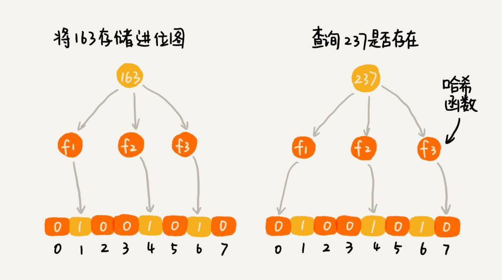

45 | 位图：如何实现网页爬虫中的URL去重功能？
网页爬虫是搜索引擎中的非常重要的系统，负责爬取几十亿、上百亿的网页。爬虫的工作原理是，通过解析已经爬取页面中的网页链接，然后再爬取这些链接对应的网页。而同一个网页链接有可能被包含在多个页面中，这就会导致爬虫在爬取的过程中，重复爬取相同的网页。如果你是一名负责爬虫的工程师，你会如何避免这些重复的爬取呢？
最容易想到的方法就是，我们记录已经爬取的网页链接（也就是 URL），在爬取一个新的网页之前，我们拿它的链接，在已经爬取的网页链接列表中搜索。如果存在，那就说明这个网页已经被爬取过了；如果不存在，那就说明这个网页还没有被爬取过，可以继续去爬取。等爬取到这个网页之后，我们将这个网页的链接添加到已经爬取的网页链接列表了。
思路非常简单，我想你应该很容易就能想到。不过，我们该如何记录已经爬取的网页链接呢？需要用什么样的数据结构呢？
算法解析
关于这个问题，我们可以先回想下，是否可以用我们之前学过的数据结构来解决呢？
这个问题要处理的对象是网页链接，也就是 URL，需要支持的操作有两个，添加一个 URL 和查询一个 URL。除了这两个功能性的要求之外，在非功能性方面，我们还要求这两个操作的执行效率要尽可能高。除此之外，因为我们处理的是上亿的网页链接，内存消耗会非常大，所以在存储效率上，我们要尽可能地高效。
我们回想一下，满足这些条件的数据结构有哪些呢？显然，散列表、红黑树、跳表这些动态数据结构，都能支持快速地插入、查找数据，但是对内存消耗方面，是否可以接受呢？
我们拿散列表来举例。假设我们要爬取 10 亿个网页（像 Google、百度这样的通用搜索引擎，爬取的网页可能会更多），为了判重，我们把这 10 亿网页链接存储在散列表中。你来估算下，大约需要多少内存？
假设一个 URL 的平均长度是 64 字节，那单纯存储这 10 亿个 URL，需要大约 60GB 的内存空间。因为散列表必须维持较小的装载因子，才能保证不会出现过多的散列冲突，导致操作的性能下降。而且，用链表法解决冲突的散列表，还会存储链表指针。所以，如果将这 10 亿个 URL 构建成散列表，那需要的内存空间会远大于 60GB，有可能会超过 100GB。
当然，对于一个大型的搜索引擎来说，即便是 100GB 的内存要求，其实也不算太高，我们可以采用分治的思想，用多台机器（比如 20 台内存是 8GB 的机器）来存储这 10 亿网页链接。这种分治的处理思路，我们讲过很多次了，这里就不详细说了。
对于爬虫的 URL 去重这个问题，刚刚讲到的分治加散列表的思路，已经是可以实实在在工作的了。不过，作为一个有追求的工程师，我们应该考虑，在添加、查询数据的效率以及内存消耗方面，我们是否还有进一步的优化空间呢？
你可能会说，散列表中添加、查找数据的时间复杂度已经是 O(1)，还能有进一步优化的空间吗？实际上，我们前面也讲过，时间复杂度并不能完全代表代码的执行时间。大 O 时间复杂度表示法，会忽略掉常数、系数和低阶，并且统计的对象是语句的频度。不同的语句，执行时间也是不同的。时间复杂度只是表示执行时间随数据规模的变化趋势，并不能度量在特定的数据规模下，代码执行时间的多少。
如果时间复杂度中原来的系数是 10，我们现在能够通过优化，将系数降为 1，那在时间复杂度没有变化的情况下，执行效率就提高了 10 倍。对于实际的软件开发来说，10 倍效率的提升，显然是一个非常值得的优化。
如果我们用基于链表的方法解决冲突问题，散列表中存储的是 URL，那当查询的时候，通过哈希函数定位到某个链表之后，我们还需要依次比对每个链表中的 URL。这个操作是比较耗时的，主要有两点原因。
一方面，链表中的结点在内存中不是连续存储的，所以不能一下子加载到 CPU 缓存中，没法很好地利用到 CPU 高速缓存，所以数据访问性能方面会打折扣。
另一方面，链表中的每个数据都是 URL，而 URL 不是简单的数字，是平均长度为 64 字节的字符串。也就是说，我们要让待判重的 URL，跟链表中的每个 URL，做字符串匹配。显然，这样一个字符串匹配操作，比起单纯的数字比对，要慢很多。所以，基于这两点，执行效率方面肯定是有优化空间的。
对于内存消耗方面的优化，除了刚刚这种基于散列表的解决方案，貌似没有更好的法子了。实际上，如果要想内存方面有明显的节省，那就得换一种解决方案，也就是我们今天要着重讲的这种存储结构，布隆过滤器（Bloom Filter）。
在讲布隆过滤器前，我要先讲一下另一种存储结构，位图（BitMap）。因为，布隆过滤器本身就是基于位图的，是对位图的一种改进。
我们先来看一个跟开篇的问题非常类似，但稍微简单的问题。我们有 1 千万个整数，整数的范围在 1 到 1 亿之间。如何快速查找某个整数是否在这 1 千万个整数中呢？
当然，这个问题还是可以用散列表来解决。不过，我们可以使用一种比较“特殊”的散列表，那就是位图。我们申请一个大小为 1 亿、数据类型为布尔类型（true 或者 false）的数组。我们将这 1 千万个整数作为数组下标，将对应的数组值设置成 true。比如，整数 5 对应下标为 5 的数组值设置为 true，也就是 array[5]=true。
当我们查询某个整数 K 是否在这 1 千万个整数中的时候，我们只需要将对应的数组值 array[K] 取出来，看是否等于 true。如果等于 true，那说明 1 千万整数中包含这个整数 K；相反，就表示不包含这个整数 K。
不过，很多语言中提供的布尔类型，大小是 1 个字节的，并不能节省太多内存空间。实际上，表示 true 和 false 两个值，我们只需要用一个二进制位（bit）就可以了。那如何通过编程语言，来表示一个二进制位呢？
这里就要用到位运算了。我们可以借助编程语言中提供的数据类型，比如 int、long、char 等类型，通过位运算，用其中的某个位表示某个数字。文字描述起来有点儿不好理解，我把位图的代码实现写了出来，你可以对照着代码看下，应该就能看懂了。
public class BitMap { // Java 中 char 类型占 16bit，也即是 2 个字节
private char[] bytes;
private int nbits;
public BitMap(int nbits) {
this.nbits = nbits;
this.bytes = new char[nbits/16+1];
}
public void set(int k) {
if (k > nbits) return;
int byteIndex = k / 16;
int bitIndex = k % 16;
bytes[byteIndex] |= (1 << bitIndex);
}
public boolean get(int k) {
if (k > nbits) return false;
int byteIndex = k / 16;
int bitIndex = k % 16;
return (bytes[byteIndex] & (1 << bitIndex)) != 0;
}
}
从刚刚位图结构的讲解中，你应该可以发现，位图通过数组下标来定位数据，所以，访问效率非常高。而且，每个数字用一个二进制位来表示，在数字范围不大的情况下，所需要的内存空间非常节省。
比如刚刚那个例子，如果用散列表存储这 1 千万的数据，数据是 32 位的整型数，也就是需要 4 个字节的存储空间，那总共至少需要 40MB 的存储空间。如果我们通过位图的话，数字范围在 1 到 1 亿之间，只需要 1 亿个二进制位，也就是 12MB 左右的存储空间就够了。
关于位图，我们就讲完了，是不是挺简单的？不过，这里我们有个假设，就是数字所在的范围不是很大。如果数字的范围很大，比如刚刚那个问题，数字范围不是 1 到 1 亿，而是 1 到 10 亿，那位图的大小就是 10 亿个二进制位，也就是 120MB 的大小，消耗的内存空间，不降反增。
这个时候，布隆过滤器就要出场了。布隆过滤器就是为了解决刚刚这个问题，对位图这种数据结构的一种改进。
还是刚刚那个例子，数据个数是 1 千万，数据的范围是 1 到 10 亿。布隆过滤器的做法是，我们仍然使用一个 1 亿个二进制大小的位图，然后通过哈希函数，对数字进行处理，让它落在这 1 到 1 亿范围内。比如我们把哈希函数设计成 f(x)=x%n。其中，x 表示数字，n 表示位图的大小（1 亿），也就是，对数字跟位图的大小进行取模求余。
不过，你肯定会说，哈希函数会存在冲突的问题啊，一亿零一和 1 两个数字，经过你刚刚那个取模求余的哈希函数处理之后，最后的结果都是 1。这样我就无法区分，位图存储的是 1 还是一亿零一了。
为了降低这种冲突概率，当然我们可以设计一个复杂点、随机点的哈希函数。除此之外，还有其他方法吗？我们来看布隆过滤器的处理方法。既然一个哈希函数可能会存在冲突，那用多个哈希函数一块儿定位一个数据，是否能降低冲突的概率呢？我来具体解释一下，布隆过滤器是怎么做的。
我们使用 K 个哈希函数，对同一个数字进行求哈希值，那会得到 K 个不同的哈希值，我们分别记作 X1X1，X2X2，X3X3，…，XKXK。我们把这 K 个数字作为位图中的下标，将对应的 BitMap[X1X1]，BitMap[X2X2]，BitMap[X3X3]，…，BitMap[XKXK] 都设置成 true，也就是说，我们用 K 个二进制位，来表示一个数字的存在。
当我们要查询某个数字是否存在的时候，我们用同样的 K 个哈希函数，对这个数字求哈希值，分别得到 Y1Y1，Y2Y2，Y3Y3，…，YKYK。我们看这 K 个哈希值，对应位图中的数值是否都为 true，如果都是 true，则说明，这个数字存在，如果有其中任意一个不为 true，那就说明这个数字不存在。

对于两个不同的数字来说，经过一个哈希函数处理之后，可能会产生相同的哈希值。但是经过 K 个哈希函数处理之后，K 个哈希值都相同的概率就非常低了。尽管采用 K 个哈希函数之后，两个数字哈希冲突的概率降低了，但是，这种处理方式又带来了新的问题，那就是容易误判。我们看下面这个例子。

布隆过滤器的误判有一个特点，那就是，它只会对存在的情况有误判。如果某个数字经过布隆过滤器判断不存在，那说明这个数字真的不存在，不会发生误判；如果某个数字经过布隆过滤器判断存在，这个时候才会有可能误判，有可能并不存在。不过，只要我们调整哈希函数的个数、位图大小跟要存储数字的个数之间的比例，那就可以将这种误判的概率降到非常低。
尽管布隆过滤器会存在误判，但是，这并不影响它发挥大作用。很多场景对误判有一定的容忍度。比如我们今天要解决的爬虫判重这个问题，即便一个没有被爬取过的网页，被误判为已经被爬取，对于搜索引擎来说，也并不是什么大事情，是可以容忍的，毕竟网页太多了，搜索引擎也不可能 100% 都爬取到。
弄懂了布隆过滤器，我们今天的爬虫网页去重的问题，就很简单了。
我们用布隆过滤器来记录已经爬取过的网页链接，假设需要判重的网页有 10 亿，那我们可以用一个 10 倍大小的位图来存储，也就是 100 亿个二进制位，换算成字节，那就是大约 1.2GB。之前我们用散列表判重，需要至少 100GB 的空间。相比来讲，布隆过滤器在存储空间的消耗上，降低了非常多。
那我们再来看下，利用布隆过滤器，在执行效率方面，是否比散列表更加高效呢？
布隆过滤器用多个哈希函数对同一个网页链接进行处理，CPU 只需要将网页链接从内存中读取一次，进行多次哈希计算，理论上讲这组操作是 CPU 密集型的。而在散列表的处理方式中，需要读取散列冲突拉链的多个网页链接，分别跟待判重的网页链接，进行字符串匹配。这个操作涉及很多内存数据的读取，所以是内存密集型的。我们知道 CPU 计算可能是要比内存访问更快速的，所以，理论上讲，布隆过滤器的判重方式，更加快速。
总结引申
今天，关于搜索引擎爬虫网页去重问题的解决，我们从散列表讲到位图，再讲到布隆过滤器。布隆过滤器非常适合这种不需要 100% 准确的、允许存在小概率误判的大规模判重场景。除了爬虫网页去重这个例子，还有比如统计一个大型网站的每天的 UV 数，也就是每天有多少用户访问了网站，我们就可以使用布隆过滤器，对重复访问的用户，进行去重。
我们前面讲到，布隆过滤器的误判率，主要跟哈希函数的个数、位图的大小有关。当我们往布隆过滤器中不停地加入数据之后，位图中不是 true 的位置就越来越少了，误判率就越来越高了。所以，对于无法事先知道要判重的数据个数的情况，我们需要支持自动扩容的功能。
当布隆过滤器中，数据个数与位图大小的比例超过某个阈值的时候，我们就重新申请一个新的位图。后面来的新数据，会被放置到新的位图中。但是，如果我们要判断某个数据是否在布隆过滤器中已经存在，我们就需要查看多个位图，相应的执行效率就降低了一些。
位图、布隆过滤器应用如此广泛，很多编程语言都已经实现了。比如 Java 中的 BitSet 类就是一个位图，Redis 也提供了 BitMap 位图类，Google 的 Guava 工具包提供了 BloomFilter 布隆过滤器的实现。如果你感兴趣，你可以自己去研究下这些实现的源码。
课后思考
- 假设我们有 1 亿个整数，数据范围是从 1 到 10 亿，如何快速并且省内存地给这 1 亿个数据从小到大排序？
- 还记得我们在哈希函数（下）讲过的利用分治思想，用散列表以及哈希函数，实现海量图库中的判重功能吗？如果我们允许小概率的误判，那是否可以用今天的布隆过滤器来解决呢？你可以参照我们当时的估算方法，重新估算下，用布隆过滤器需要多少台机器？